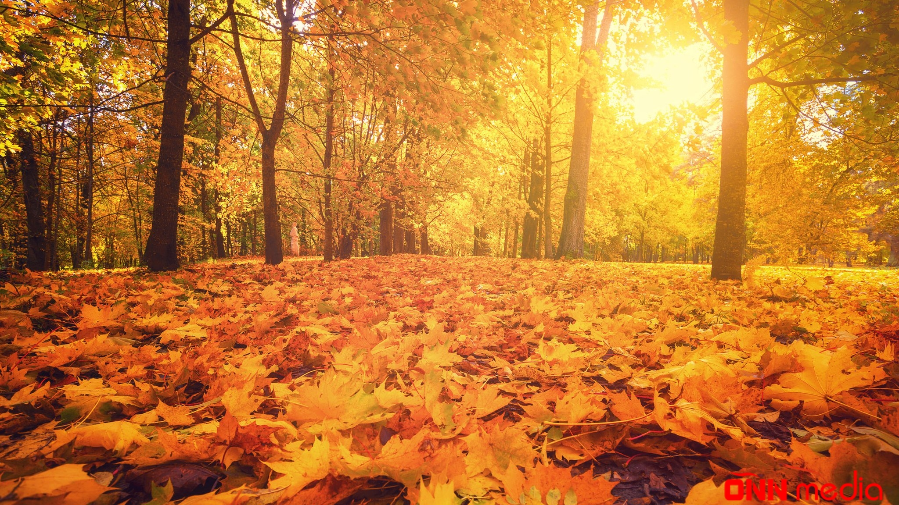

| Şimal və cənub yarımkürələrində astronomik və təqvim payız fəsli | ||
|---|---|---|
| Təqvim | Astronomik | |
| Şimal yarımkürəsi | 1 sentyabr — 30 noyabr | Payız gecə-gündüz bərabərliyi (22-23 sentyabr) — qış gündönümü (21-22 dekabr) |
| Cənub yarımkürəsi | 1 mart — 31 may | Yaz gecə-gündüz bərabərliyi (20-21 mart) — yay gündönümü (20-21 iyun) |
Yay öz gözəllikləri ilə bizimlə sağollaşıb bütün ixtiyarı payıza verir. Payız da sevinə-sevinə ilk addımlarını ataraq bu gözəlliyə özünəməxsus bəzək-düzək vurur, rəng qatır. Həyatımızı bir az da baxımlı, ürəyəyatımlı etməyə çalışır. Hər fəslin öz gözəlliyi, öz rəng çalarları var. Amma payızın rəngləri daha gözəldir, daha füsunkar və cəlbedicidir. Payız bizi sehirləyən tamam başqa bir sirli aləmdir. Deməli, belə bir gözəlliyə tamaşa edən və onun içində yaşayan bizlər də xoşbəxtik.
Payız gəlir... Payız gəlişini, ilk addımlarını yağışların yağması ilə, soyuq küləklərin əsməsi ilə bildirir. Sanki asta-asta qulaqlarımıza pıçıldayaraq: "Hazırlaşın mən gəlirəm", - deyir. Yağışla, çiskinlə yüklənmiş ağır, lay-lay buludlar bir göz qırpımındaca göy üzünə pərdə çəkib günəşi görünməz edir. Günəşi bizdən gizlədən buludlar bir-birinə dəyib nərilti-gurultu qopararaq, yeri-göyü silkələyir. Sanki bununla anamız təbiət insanlara payızın gəlişini hiss etdirir, əl-ayaqlarını çöl-bayırdan yığışdırmağın zamanı çatdığını söyləyir. Qəflətən qılıncını çəkən şimşək bir andaca yeri-göyü işıqlandırır, buludları doğram-doğram edir. İsti yay günlərində, bürkülü havalarda yağmayan yağış, sanki payızın gəlişindən ürəklənib asta-asta, tələsmədən çisələməyə başlayır. Havanın əvvəlki hərarəti azalır, istiliyi öləziyir, zəifləyir. Payızın gəlişini hiss edən günəş də yavaş-yavaş bizdən uzaqlaşır. Onun şüaları daha əvvəlki kimi parlaq və isti olmur, adamı yandırıb-yaxmır. Buna görə də payızın ilk günləri başlayan kimi havanın şaxı sınır, yavaş-yavaş sərinlik düşür. Yay günlərinin istinin əlindən bezən bizlər bir az sərinləyib rahatlanırıq, daha özümüzə kölgəlik axtarmalı olmuruq.
Payız gəlir... Payız gələndə ilk yada düşən yəqin ki, məşhur və sevimli mahnının məşhur sözləri olur. Sərin küləklərdən sərinləyə-sərinləyə biz də astadan: "Payız gəldi, uçdu getdi quşlar...", - deyə pıçıldayırıq. Və bir az da quşların uçub getdiyinə, meşələrin, çöllərin onlarsız qalaraq boşaldığına, yaraşıqsız görünəcəyinə təəssüflənirik. Təəssüflənirik ki, bir müddət quşların şirin nəğməsinə, cəh-cəhinə həsrət qalacağıq. Sonra da düşünürük ki, görəsən, bu payız günlərində uçub gedən təkcə quşlarmı oldu? Təbii ki, yox! Uçub gedən yalnız quşlar olsaydı, nə var idi ki? Heç bunu nə özümüzə dərd edib dilimizə gətirər, nə yazıya alar, nə də beynimizə yükləyib təəssüflənərdik. Bu payız günlərində fikirləşirsən ki, o gedən quşlar gələn ilin isti aylarında qanad çala-çala, cik-cik vura-vura yenidən sevinc içində doğma yuvalarına dönəcəklər. Bu payız günlərində adamı təəssüfləndirən həm də odur ki, ilk qədəmlərini atan bu payız ömrümüzün yenicə başa çatmış bir yayını da götürüb birdəfəlik özü ilə apardı. O yay bir daha həmin ab-hava ilə ömrümüzə qayıtmayacaq. Ondan bizə yalnız isti, ilıq və acılı-şirinli xatirələr qalacaq. Həyatı nə bilmək olur, bəlkə də bu günlərin üstündən illər keçəndən sonra o isti, ilıq xatirələr qəlbimizi üşüdəcək, ürəyimizi titrədəcək.
Payız gəlir... Nədənsə, payız fəsli mənə hələ illərin o tayından, yeniyetməlikdən, gənclikdən həmişə sirli-sehirli görsənib. Sanki daha cəlbedicidir, rəngarəng və bənzərsizdir. Başqa fəsillərdən fərqli olaraq daha küləklidir, yağışlı və sazaqlıdır. Küləyi, yağışı və soyuğu ilə təbiətin əynindən yaşıl donunu çıxarmağı bacarır. Yayda coşub-çağlayan, yerə-göyə sığmayaraq hər şeyə meydan oxuyan anamız təbiət yavaş-yavaş əllərini qaldırıb çarəsizcəsinə payıza təslim olur. Onun diktəsi ilə durub-oturur, sözündən çıxa bilmir, üzünə qayıtmır. Özünü belə üzüyola göstərən təbiət yavaş-yavaş yazda sevinə-sevinə əyninə geyindiyi libasını indi könülsüz-könülsüz dəyişməyə başlayır. Asta-asta, hiss olunmadan qızılı paltara bürünür. Qərinələrdir ki, zaman özünün əbədi yolu ilə yorulmadan, aram-aram irəli gedir. Hərdən mənə elə gəlir ki, payız təbiətin sarı paltarlı nazlı, qəmzəli gəlinidir. Bu paltar ona çox yaraşır, sanki əyninə biçilib. Payız bu paltarda bir az ərköyün, bir az çılğın, bir az da kövrək görsənir. Kövrələn kimi də topa-topa buludlarından göz yaşları axıdır. Bu göz yaşlarını silməyə isə Tanrıdan başqa kimsənin qüdrəti çatmır.
Payız gəlir... Payızın gəlişini bəlkə də adamlardan da əvvəl meşələrin yaraşığı və etibarlı keşikçisi olan ağaclar hiss edir. Onlar soyuğun nəfəsini duyan kimi müdrikcəsinə dərin fikrə gedirlər. Bəlkə də elə bu fikirdəndir ki, yavaş-yavaş yarpaqlarına xal düşür. Xallanan yarpaqların başının üstünü saralmaq qorxusu kəsdirir. Yarpaqlar insanların puç olan istək və arzuları kimi saralmağa üz qoyur. Duyulmadan, hiss edilmədən ağaclar sarılı, qırmızılı libasa bürünür. Elə bil ağaclar o geyimdə daha müdrik və nurlu görsənirlər. Yarpaqlar saraldıqca zəifləyir, zəiflədikcə də gücdən düşür. Daha öz yerində əvvəlki kimi möhkəm dayana bilmir. Külək də bu cür heydən, gücdən düşmüş yarpaqları bir andaca budağından üzüb yerə səpələyir. Bir neçə günün içində sanki torpağın üstünə xalı döşənir. Yarpaqlar ağacdan çox könülsüz-könülsüz, göz yaşları ilə ayrılır. Sanki öz anası ilə, doğması ilə sağollaşır. Külək yalnız yarpağı budaqdan yerə salmaqla kifayətlənmir, sonra onu qabağına qataraq qovub uzaqlara aparır. Çılpaq qalan ağaclar yavaş-yavaş torpağın qoynunda qış yuxusuna gedir. Təbiət sükuta dalır, ətrafa sakitlik çökür. Nə quşların nəğməsi, nə də cırcıramaların səsi eşidilir. Qışın şaxtasından qorxmayan ağaclar hələ payızdan paltarlarını çıxarırlar.
Payız gəlir... Gələn bu payız özü ilə yaradıcı adamlara ilham gətirir, onlara təzə ruh, təzə nəfəs, təzə həvəs verir. Mənə elə gəlir ki, payız yaradıcı insanlara yeni mövzular bəxş edən gözəl bir fəsildir. Şairlərin ən çox sevdiyi, vəsf edib, nəzmə çəkdiyi də elə payız fəsli deyilmi? Rəssamların çəkdiyi əsərlərin çoxu payıza həsr olunmayıbmı? Gözəl musiqilər də sanki payız kimi həzin, nazlı, qəmzəli və ürəyəyatımlıdır. Deməli, payız daha sevimlidir, daha gözəldir, daha ürəyəyatımlıdır. Bu gözəllik daim ruhumuzu qidalandırır, ovqatımıza ovqat qatır.
Payız gəlir... Payızın əsən soyuq küləkləri mürgüləyib dərin yuxuya getmək istəyən düşüncələri də oyadır. Yayın istisindən, bürküsündən təngə gəlib tıncıxan insanlar bu fəsildə daha çox yazıb-yaratmağa meyil göstərir, daha çox mütaliə edirlər. Payızda daha çox sevib-sevilirlər. Bəlkə də elə buna görə də çoxları payız fəslinin gəlişini həsrətlə, intizarla gözləyir. Payız həm də toylar fəslidir. Sevib sevilənlərin xoşbəxtliyə qovuşduğu, arzuların çiçək açdığı, istəklərin ürəklərə şölə saçdığı fəsildir.
Payız gəlir... Gəlişi ilə ayları, illəri üst-üstə qalaqlayır. Hər payızda illər üst-üstə gəldikcə, sakini olduğumuz yer kürəsi də yaşa dolub ahıllaşır, müdrikləşir. Müdrikləşdikcə də gözəlləşir, gözəlləşdikcə də diqqətimizi daha çox özünə cəlb edir, daha çox sevilir. Sevildikcə də vəsf olunur...
Payız gəlir... Tələm-tələsik özünü yetirən bu payızın haradasa insan ömrünə də bənzərliyi var. Payız fəslində ağacların yarpaqları saralıb töküldüyü kimi, insanların da düşüncələri saralıb xatirəyə dönərək söz-söz, cümlə-cümlə, səssiz, səmirsiz ağ vərəqlər üzərinə səpələnir. Nədənsə, bu fəsildə xəyallara daha tez-tez dalaraq keçmişimizi, ötüb arxada qalmış günlərimizi yada salıb xatırlayırıq. Yaşanmış aylar, günlər, anbaan, sanibəsaniyə xatirələrimizə hopur. Xəyallarımız ömrümüzün ötən illərinin ənginliklərini yorulmadan dolaşdıqca dolaşır. Sanki ömrümüzün üstünə bir yaş da gəldiyini hər addımda çətinlik çəkmədən hiss edirik. Tənhalığa, sakitliyə, səssizliyə çəkilməyə can atırıq. Düşüncələrimizlə, fikirlərimizlə baş-başa, üz-üzə qalmaq istəyirik. Sakitliyin, sükutun hökm sürdüyü yerlərə getməyə çalışırıq. Payız bizi yaman ovsunlayır...
Payız gəlir... Şairlər bu fəsildə daha çox payız qoxulu şeirlər yazırlar. Bu fəsildə yazılan şeirlərin çoxunda bir payız rəngi, bir payız soyuqluğu, bir payız ovqatı var. O ovqat ki, daim bizi yaşamağa ilhamlandırır, əlimizdən tutub üzü sabahlara, gələcəyə doğru çəkib aparır. Biz də bir söz söyləmədən sakitcə payızın istəyinə tabe olur, boyun əyirik. Onun istəyini yerinə yetirməkdən zövq alırıq.
Payız gəlir... Payız gəlişi ilə insanların üzünə rənglər dünyasının qapılarını çox geniş açır. Başqa fəsillərə baxanda payız daha rəngli, daha çeşidli, daha bənzərsiz görsənir. Yazda, yayda yaşıl rəngdə olan nə varsa, hamısı yavaş-yavaş donunu dəyişir. Qırmızı, sarı, yaşıl, çəhrayı, daha hansı rənglər olmur payızda. Gördüyümüz və zövqümüzü oxşayan bu rənglər qəlbimizi oxşayır, ürəyimizi açır. Bizi xoş günlər yaşamağa səsləyir.
Payız gəlir... Gəlişi ilə sanki bizi neçə aydan bəri davam edən istinin, bürkünün əlindən xilas edir. Küləklərin qolları üstündə qucağında bizə buz bulaqların, meşələrin sərinliyini, dağların əzəmət və vüqarını gətirir.
Payız gəlir... Qızılı payız gəlişi ilə neçə-neçə ailələrə sevinc bəxş edir. Evlərdən körpə qığıltısı, ana laylası eşidilir. İnsanların üzü gülür, könüllərinə sevinc qonur. Belə gözəl anlarda insanlar sabahlara daha böyük ümid və arzularla boylanırlar. Qışın soyuğundan qorunmaq üçün payız ovqatında, payız ilıqlığında olan arzularına bürünürlər.
Payız gəlir... Qoy gəlsin, xoş gəlir. Qədəmləri mübarək olsun, payız! Təki gələn fəsillərin payızı olsun. Ömrümüzün payızı gəlməyə tələsməsin, bir az ləngisin, bir az yubansın, bir az gözləsin. Qoy ömür karvanımız aram-aram öz yolu ilə davam eləsin. Bu yollar həmişə açıq, hamar və geniş olsun. Bu yollarda heç vaxt büdrəməyək, yıxılmayaq. Payız fəsli ömrümüzə xoş günlər, xoş anlar gətirsin...
Payız gəlir... Özü də hiss olunmadan, xəbərdarlıq etmədən gəlir. Görəsən, ömrümüzə bu gələn payız dünya bina olandan bəri neçəncidir? Minincidir, milyonuncudur, trilyonuncudur? Bunu hesablayan, bunun sayını bilən varmı? Kimsə bunun marağındadırmı? Bəlkə də heç bu kimsənin ağlına gəlmir, fərqinə varmır. Bəlkə də elə belə daha yaxşıdır. Nə fərqi var, neçənci payızdır. Əsas odur ki, gəlir və gəlişi ilə hamımıza xoşbəxtlik bəxş etsin, gözəl anlar yaşatsın.
